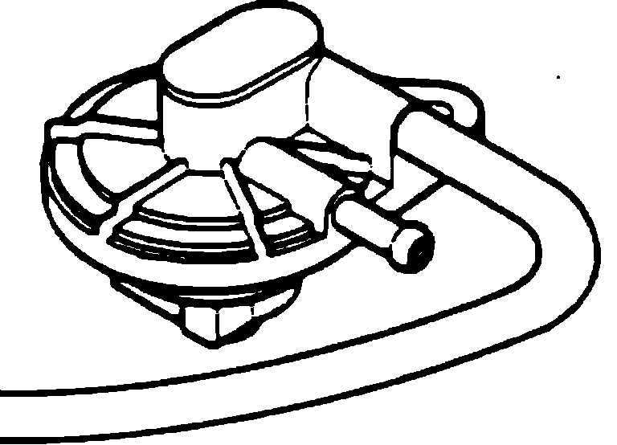

Fuel Tank Pressure Release Valve: Description and Operation
Two-Way Valve:

PURPOSE
To maintain the tank pressure at a proper value and to prevent any vacuum from being present in the tank.
OPERATION
The pressure valve is designed to open when the fuel tank internal pressure has increased over normal pressure and the vacuum valve opens when a vacuum has been produced in the tank.
CONSTRUCTION
The Two-Way valve consists of a pressure valve and a vacuum valve.